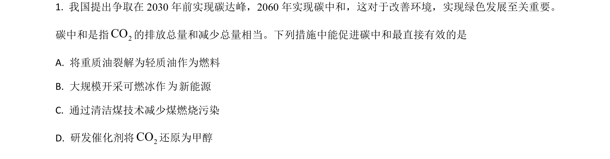
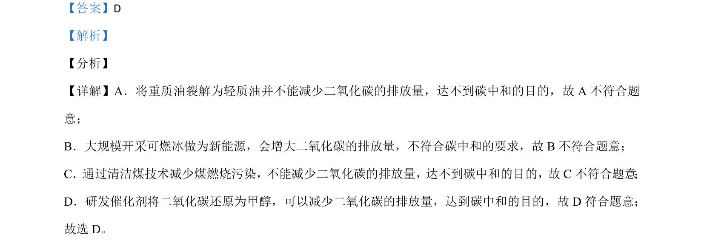

考点：碳中和 二氧化碳减排 催化剂应用

考查化学与碳中和的关系，判断哪些措施可减少二氧化碳排放。

📄 原 PDF 第 1 页：
素材/真题/吉林/2008-2024·（吉林）化学高考真题/2021年高考化学试卷（全国乙卷）（解析卷）.pdf
【答案】D 【解析】 【分析】 【详解】A．将重质油裂解为轻质油并不能减少二氧化碳的排放量，达不到碳中和的目的，故 A 不符合题 意； B．大规模开采可燃冰做为新能源，会增大二氧化碳的排放量，不符合碳中和的要求，故 B不符合题意； C．通过清洁煤技术减少煤燃烧污染，不能减少二氧化碳的排放量，达不到碳中和的目的，故C不符合题意 ； D．研发催化剂将二氧化碳还原为甲醇，可以减少二氧化碳的排放量，达到碳中和的目的，故 D 符合题意； 故选 D。